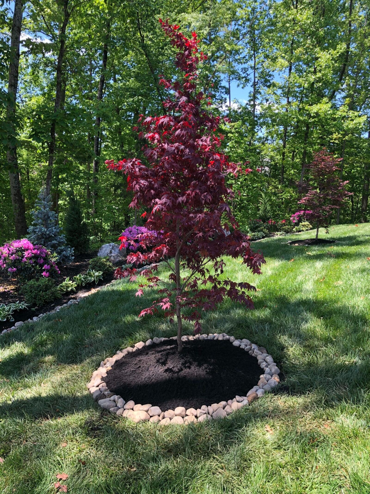

We all know that the decisions we make about taking care of our homes are important. When it comes to your outdoor living space, a great landscaper can create a perfect backyard oasis, and the wrong one can leave you with headaches, dead plants, and wasted money. In East Tennessee, hilly terrain, clay-heavy soil, and seasonal extremes all play a role, making choosing wisely essential.
The Yard Force has seen everything the Knoxville region has to offer. Whether you’re new to landscaping or just planning your next big outdoor project, property owners may make three common — and costly — mistakes when hiring a landscaping company in Knoxville and how to avoid them.
1. Forgetting To Ask About Related Work
One of the most frequent and avoidable missteps when hiring a landscape contractor is not asking about related work. Knoxville homeowners sometimes assume that all landscapers do the same thing or that the job only includes cutting grass. But landscaping involves more than just mowing and mulching. It includes precision grading, irrigation, lighting, hardscaping, and drainage corrections.
For example, East Tennessee properties often have water runoff issues due to the area’s natural slopes and clay-heavy soil. If your chosen landscaper lacks experience with proper drainage solutions, that beautiful flower bed could turn into a muddy mess after the first rainstorm.
Before signing any contract, ask questions like:
- “Have you worked on projects with similar terrain or challenges?”
- “Can you handle irrigation, retaining walls, or hardscaping if needed?”
- “Do you have photos or testimonials from past jobs in the Knoxville area?”
Take a close look at related projects for evidence the landscaper actually understands the bigger picture and that they can handle your property’s needs. Don’t skip this step in the process, as this is one of the common local landscaping mistakes that can lead to costly do-overs later.
2. Focusing Only on Price Instead of Value
In any service industry, price matters, of course. However, in landscaping, it’s not everything. One of the biggest mistakes Knoxville homeowners make when selecting a lawn care service is choosing based solely on the cheapest quote. Lowball prices may look good at first, but they often come with cut corners: underqualified labor, low-quality materials, or missing services you expected.
Here in Knoxville, landscaping costs can vary depending on:
- Yard slope or uneven terrain
- Drainage and grading challenges
- Seasonal plant selection and soil prep
For instance, a company that offers an eye-popping deal may not factor in the need for soil amendments. But that is an absolute must in many East Tennessee lawns due to compacted clay. That omission alone will lead to poor plant growth or erosion problems.
When choosing a landscaping company, always ask for a detailed, itemized estimate. A thorough quote shows exactly what’s included and what’s not. Most importantly, prioritize long-term value over short-term savings. Discuss the quote carefully because a higher price from a reputable company often means better materials, a stronger design plan, and fewer future issues.
3. Assuming All Landscaping Companies Do the Same Thing
Around Knoxville, landscaping can mean anything from basic lawn mowing to complex outdoor living space construction. One of the biggest misunderstandings is assuming that all companies offer the same services.
Some companies specialize in residential landscaping services like weekly mowing, trimming, and mulching. Others offer full-scale landscape design in Knoxville, TN, including hardscapes, plant selection, lighting systems, and drainage solutions. If you don’t clarify what you need and what they actually offer, you could easily hire someone who can’t deliver quality services.
Let’s say you dream of a multi-level patio and garden area for your West Hills home. If the company you hire only offers lawn maintenance, you’ll end up disappointed and stuck back at square one. On the flip side, if you just want reliable, regular yard care, hiring a design-build firm may be overkill.
The solution relies on defining your project goals early. Do you want curb appeal, a functional family space, or a low-maintenance design? Match your goals to the company’s skill set. Reputable contractors will walk you through your options.
Get the Job Done Right With a Trusted Knoxville Landscaping Team
Avoiding these three mistakes can save you a ton of time, money, and stress. The key is to find a local expert who understands what works in our region and commits to turning your ideas into reality.
The Yard Force proudly serves the greater Knoxville area with quality, reliable services backed by experience. Whether you need custom landscape design in Knoxville, TN, expert drainage solutions, or a complete yard makeover, we’re here to help.
We take pride in transparent pricing, reliable scheduling, and honest communication because that’s what Knoxville homeowners deserve.
Ready to transform your yard? Call The Yard Force today at (865) 290-8815 to start your project with East Tennessee’s finest professional landscaping service!